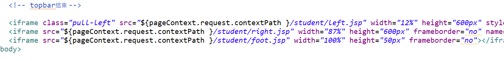

首先先来描述一下我所遇到的问题，我在一个首页的index.jsp页面中用到了iframe框架，见下图

在iframe中引入jsp页面的路径，是几个iframe框架组合成的一个完整的页面，但是他们的存在是相互独立的。接着我在一个子页面中（right.jsp）中，
想要将页面跳转到登录的页面（登录页面是一个独立的页面，并不是iframe框架），跳转是成功的，但是页面是显示在子页面中的。
问题如何解决：
方法一：
如果你的页面跳转是使用的<a></a>标签，只需在 a 标签中添加 "target="_parent" 属性即可。
方法二：
在head标签之间加入<base target="_parent" /> 。则子页面内的所有跳转默认是父页面一起跳。（注：在子页面的head标签中添加哦）
方法三：
在js中跳转，window.location.href()；因为window这种跳转是没有target属性的，这时，你可以使用取个巧，
让父页面跟着一起跳转，即在window.location.href=url后面加上window.parent.location.href=url;
注：希望能帮助到遇到相同问题你